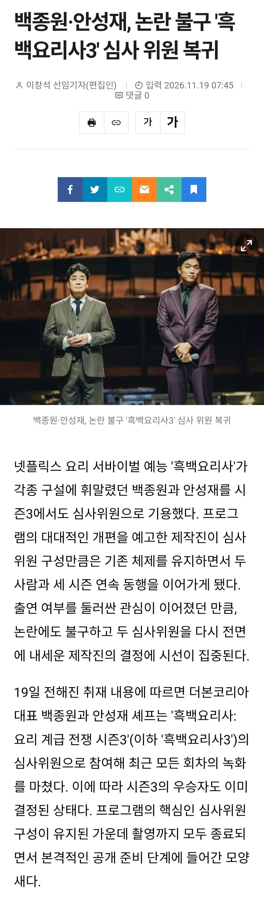

https://www.mediafine.co.kr/news/articleView.html?idxno=95541

https://www.mediafine.co.kr/news/articleView.html?idxno=95541
진행이나 시청률이나 문제 없겠지만 뭔가 시즌1에는 나름 꺼드럭 파워도 파워랍시고 안성재를 잡아주는 2강체재였는데 시즌2에서는 인제 초소형 이어폰 찬스도 못쓰고 그냥 아예 한마디도 못하는 떨거지가 되서 심사위원의 관점에서는 사실상 안성재 단독심사같은 느낌이라 그게 아쉬움
한 분은 ㅂㄱㅁ
ㅋㅋㅋㅋㅋㅋㅋㅋㅋ
논란은 차치하고, 재미는 보장되어있으니까
난 볼 것 같아
안성재 나올수밖에 없는게 스튜디오 슬램에서 제작 총괄 하는데 안성재 유튜브 프로덕션이 스튜디오 슬램임
아마 윤남노도 그렇고 스튜디오 슬램 방송에서 키워서 유튜브 MCN까지 하니까 시즌3에도 스튜디오 슬램이 관리하는 요리 인플루언서는 다 나올것 같음